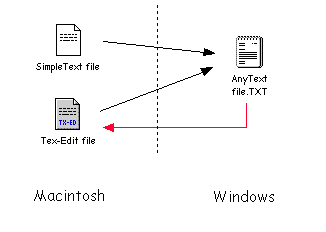
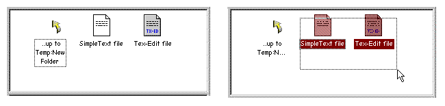
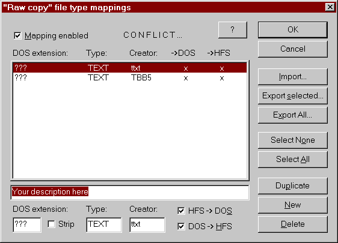
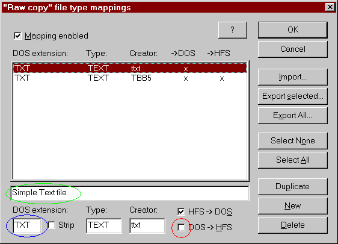
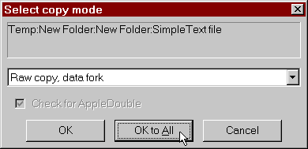
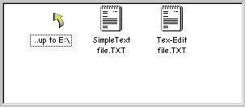
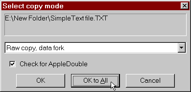
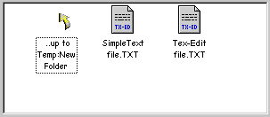

HFVExplorer opens the dialog shown above. It has extracted the type
and creator information for the files, but some info is now required from
you. Particularly note the text "C O N F L I C T ..." at the top of the
dialog. It means that the selected mapping is not ok, because two different
mappings try to map the type "???" to something.

The colored ellipses show what we needed to change. The blue ellipse is the DOS extension; we entered "TXT" for both of the types. The descriptive text in the green ellipse is optional, but for convenience, we entered here the descriptions -- "Simple Text file" and "Tex-Edit file". The red circle is the interesting part. We unchecked it for SimpleText, but left Tex-Edit checked. This means that whenever we copy from DOS to HFS volumes a TXT file, Tex-Edit type and creator information is used, not SimpleText. We simply cannot have both. Note that as a result, HFVExplorer does not complain with "C O N F L I C T ..." any more.
That's it, the mappings are ready. We close the dialog with OK, and
let's try it out by copying the files to the drive
"E:\".

The file type mappings work only for "Raw copy" copy modes, and we know
that the text is in the data fork. Therefore, we select "Raw copy, data
fork" and click the Ok to All button.

The E: drive now has two new files, and the extension is TXT for both
of them.

Now let's copy the files back from the E: drive to the HFS volume. Again
we use Raw copy, and want the data to be put in the data fork.
